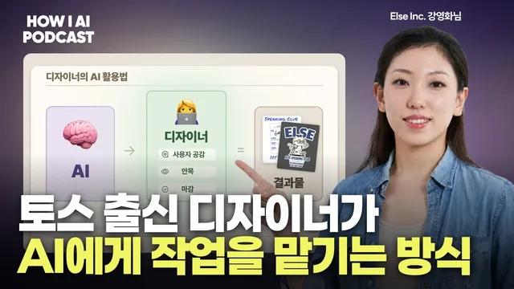

AI가 디자인+코드 다 만들어주는 시대, 토스 출신 디자이너는 '이것'을 더 강조하더라고요. (Else 강영화님)

원본 영상 보기 →
- AI는 초안 담당, 마감은 사람 담당
- AI가 질문하게 하면 디자인이 좋아져요
- 빨리 만들 수 있을수록 덜어 내야 해요
한 줄 요약
토스 프로덕트 디자이너 출신으로 영어 회화 앱 '엘스'를 만들고 있는 강영화 님이 AI로 디자인 초안을 뽑고 마감은 사람이 하는 작업 방식을 보여 줘요. 그리고 AI로 화면을 아무리 빨리 만들 수 있어도 결국 제품을 살리는 건 사용자를 만나 보고 공감하는 능력이라고 강조합니다.
전체 내용 정리
토스에서 4년, 창업 4년 차가 된 디자이너예요
이번 영상에서 조쉬가 모신 게스트는 강영화 님이에요. 디자인 일을 한 지 12~13년 정도 됐고, 그중 토스에서 4년 정도 일한 뒤 창업해서 지금 창업 4년 차라고 소개합니다. 토스에는 2019년에 입사했는데 사내 도구를 만드는 툴즈 디자이너로 시작했어요. 팀이 4, 50명 규모로 커질 때까지 있었고, 거기서 정말 많이 배우고 개인적으로도 크게 성장했다고 말해요.
퇴사한 계기는 두 가지였어요. 커리어를 더 앞으로 끌고 가려면 스스로 만들어 가는 과정이 필요하다는 생각이 들었고, 마침 운영하던 사이드 프로젝트가 성과를 내기 시작했거든요. 지금 만드는 엘스는 일하는 사람을 위한 영어 회화 앱입니다. 듀오링고 같은 앱은 사용자의 맥락을 모르다 보니 일반적인 영어를 배우게 되는데, AI를 쓰면 내 상황에 딱 맞는 콘텐츠로 공부할 수 있겠다는 관점에서 출발했다고 해요. 현재 고객은 1만 4천 명 정도예요.
엘스 전에 만든 앱이 하나 더 있어요. 바로 '우주 고양이 보라'인데, 시작은 생존을 위한 돈벌이였어요. 운세 쪽에서 전화로 타로를 봐 주는 서비스를 열었고(타로는 거의 강영화 님이 직접 봤다고 해요) 3일 만에 매출이 났습니다. 그런데 유닛 이코노믹스(고객 한 명당 수익 구조)가 맞지 않아서, 사용자를 더 싸게 데려올 방법을 찾다가 타로 앱을 만들었죠. 900원짜리 유료 상품을 붙이자마자 하루 만에 매출이 나는 걸 보고 이 시장이 돈이 되는 시장이라는 걸 알게 됐다고 해요.
이후 운세 업계를 먼저 떠난 분들을 인터뷰했더니 한국에서는 사주를 넣으면 잘될 거라는 조언을 들었어요. 2024년 초에 매출이 크게 나면서 공동 창업자들도 모두 회사를 그만두고 올인했고, 앱스토어 1위도 찍었습니다. 지금도 가입자가 120만 명 정도이고 작년 연매출이 20억 정도였다고 해요.
그런데 정작 본인은 그 일을 너무 열심히 하기가 싫었대요. 빨리 집에 가고 싶고, 별로 의미가 없는 것 같다는 생각이 들었다고요. 그래서 2025년 초부터 엘스를 시작했고, 아예 처음부터 미국에서 하자며 팀원들과 3개월간 미국에 갔어요. 결과는 잘되지 않았고, 비싼 수업료를 내고 돌아와 지금은 한국에서 키우고 있다고 털어놓습니다.
초안은 AI가, 마감은 사람이 하는 디자인 워크플로
강영화 님은 디자이너들이 AI를 쓰는 방식이 워크플로 단위로 파편화돼 있다고 봐요. 디자인 전체를 AI용으로 다시 짜기엔 리소스가 너무 많이 드니까, 자기 워크플로 안에서 AI를 지렛대처럼 쓸 수 있는 지점을 최대한 찾아서 쓰는 쪽을 택했다고 해요. 쓰는 도구는 Gemini, ChatGPT, Claude 채팅 화면, 그리고 Claude Design과 Claude Code예요.
가장 많이 쓰는 곳은 비주얼 디자인 초안입니다. 엘스에서 운영한 '치킨 클럽'이라는 스터디 그룹이 있었어요. 엘스 사용자들을 무작위로 일대일로 짝지어 주 3일 정도 영어 공부를 하게 하는 모임인데, 첫 번째 기수가 끝나고 그냥 끝내기 아쉬워서 상장을 주기로 했대요. 문제는 디자인 리소스가 부족했다는 거예요.
그래서 Pinterest에서 마음에 드는 레퍼런스를 하나 골라 AI에 넣고, 바로 이미지를 만들지 말고 구성 계획부터 짜 달라고 했어요. 따로 지시하지 않으면 AI가 바로 이미지를 만들어 버리는데 그게 마음에 안 들었다고 해요. 조쉬가 플랜 모드부터 동작시키는 거냐고 묻자, Claude Code의 플랜 모드처럼 구성을 텍스트로 먼저 짜게 한 뒤에 이미지를 만든다고 답합니다. 상장 문화가 궁금한 것도 그냥 물어봤대요. 한국에는 '참 잘했어요' 같은 도장이 있는데 거기엔 없냐는 식으로요.
AI가 만든 결과는 그대로 쓰지 않아요. Figma로 옮겨서 텍스트를 하나하나 쪼갠 다음, 구글 폰트나 눈누에서 더 예쁜 폰트를 찾아 각각 적용하고 배치를 다시 잡았어요. 구성은 비슷한데 왼쪽(AI 초안)과 오른쪽(완성본)을 비교하면 완성도가 확 올라간 게 보입니다. 출력해서 드려야 하는 상장이라 벡터로도 돼야 하고 마무리도 더 신경 써야 했다고 해요.
굿즈 겸 스티커도 같은 방식으로 만들었어요. Gemini에게 들어갈 문구를 추천받고 일러스트도 넣어 달라고 하니 귀여운 고양이가 나왔고, 그걸 Figma에서 다시 손봤죠. AI가 벡터화도 해 주는데 왜 굳이 Figma로 가져왔냐는 질문엔 이렇게 답해요. 일단 완성도가 마음에 안 들었고, 인쇄소에 맡기려면 파일이 규격에 맞게 정리돼 있어야 해서 그대로 넘기면 안 되는 경우가 많다는 거예요.
정리하면 AI의 상상력을 쓸 수 있는 곳은 최대한 쓰고, 눈으로 봤을 때 엣지가 있고 물성이 괜찮게 디렉팅해야 하는 부분은 사람이 가져간다는 게 강영화 님의 기준이에요.
프로덕트 디자인에서는 Claude Design이 질문을 던져 주는 게 좋았대요
포스터나 굿즈 같은 산출물 말고 앱 화면 디자인은 어떨까요? 촬영 2~3주 전에 Claude Design이 나와서 열심히 써 봤는데, 실제로 잘 해 주더라고 해요. 여기서도 초안은 AI가 만들고 디테일은 본인이 잡는 구조예요.
요즘 엘스는 워킹홀리데이를 가는 사람들을 타깃으로 하고 있어요. 이분들이 쓸 만한 실전 표현을 배울 곳이 부족하고, 기존 앱들은 일반적인 표현 위주로 제공할 수밖에 없는 한계가 있어서 엘스가 잘할 수 있겠다고 판단했다고 해요.
Claude Design에서 가장 좋았던 점은 AI가 먼저 질문을 해 준다는 거였어요. 어떤 맥락에서 무엇이 필요한지, 이 디자인과 저 디자인 중 원하는 게 뭔지 물어보니까 본인도 다시 한번 생각하게 되고, 답을 하다 보면 디자인이 잘 나온대요. 그래서 이 질문 중심 워크플로를 자기 디자인 작업에도 적용해야겠다는 생각까지 했다고 해요.
실제 과정은 이랬어요. 먼저 PRD(제품 요구사항 문서)를 텍스트로 정리했어요. 워킹홀리데이 맞춤 실전 영어 앱이고 목적은 무엇이고 요건은 어떻다는 내용이죠. 이 텍스트를 Gemini에 넣어 작업을 이어 갔고, Figma에서는 와이어프레임에 가까운 초안을 만들었어요. 그 초안을 PRD와 함께 Claude Design에 넣으니 꽤 그럴싸한 앱 화면이 나왔다고 해요.
좋았던 건 화면이 전부 클릭된다는 점이에요. PRD에 항목별 세부 내용은 하나도 안 넣었는데, 바리스타, 리테일, 생존 영어 같은 카테고리마다 필요한 내용을 AI가 알아서 만들어 채워 넣었대요. 그걸 보며 상상력을 자극받아 다음 흐름을 정하고 UI를 확정한 다음, Figma에서 플로 차트를 그려 엔지니어와 소통하거나 직접 구현하기도 합니다.
왜 이렇게까지 AI를 녹여 쓰냐는 질문에 대한 답은 솔직해요. "저는 너무 개발자들이 부러웠어요." 엔지니어의 생산성이 말도 안 되게 높아진 걸 보고 디자이너도 따라가야겠다고 생각했고, 초기 창업 팀이라 리소스가 부족하다는 이유도 있다고 해요.
AI가 디자인을 다 대체할지에 대해선 생각이 조금 바뀌었다고 해요. 처음엔 대체하겠다 싶었다가 Claude Design을 보고 언젠가는 할 수도 있겠지만 당분간은 아닐 것 같다는 쪽이 됐대요. Claude의 디자인 책임자인 제니 웬의 인터뷰에서도 디자이너는 당분간 살아남을 수 있고, 아주 잘하는 사람이나 열정 있는 주니어는 아직 채용될 거라는 이야기가 나왔다고 전해요. 다만 어떻게 될지 모르니 AI를 꽤 많이 따라가게 될 거라고 봅니다. 조쉬도 개발 쪽처럼 디자인에도 큰 변화가 오지 않을까 조심스럽게 내다봐요.
AI를 많이 쓰는 팀일수록 손으로 생각하는 시간을 지켜요
정량 분석 쪽은 변화가 더 빨랐어요. 예전엔 크롤링을 하거나 앰플리튜드(제품 사용 데이터 분석 도구) 로그를 AI에 먹여 분석을 시켰는데, 지금은 팀에서 헤르메스라는 AI 에이전트를 열심히 쓰면서 앰플리튜드 권한까지 주니까 알아서 잘해 준대요. 그래서 그런 작업은 굳이 직접 안 해도 되겠다는 생각이 들었고, 시간에 따라 일하는 방식이 계속 바뀌는 재미있는 시대라고 말해요.
흥미로운 건 그런데도 팀이 아날로그 도구에 가치를 많이 둔다는 점이에요. 사무실 뒤 화이트보드엔 글씨가 가득하고, 오랫동안 물리 칸반을 쓰다가 지금은 진행 중인 프로젝트 몇 개만 보드에 적어 두고 항상 보게 한대요. 원격 근무도 그리 좋아하지 않아서 거의 다 출근하는데, 마주 앉아 주고받는 대화에서 나오는 창의력을 더 높게 치기 때문이라고 해요.
일하는 순서도 사람이 먼저예요. 다 같이 이야기하며 방향을 논의한 뒤, 디자이너가 와이어프레임과 하이 피델리티(실제 완성 화면에 가까운 디자인) 사이 수준의 초안을 만들고, 엔지니어는 기술적 결정을 내려요. 강영화 님은 그 사이에 에이전트와 함께 개발도 하고요. 초반 의사 결정은 사람이 잘하는 부분이라, 화이트보드나 포스트잇으로 머릿속을 말랑말랑하게 만들어 생각을 정리하는 과정이 필요하다고 봐요.
본인도 디자인 의사 결정은 항상 손으로 먼저 해요. 머릿속에 딱 그려지는 게 없으면 다음 단계로 잘 안 넘어가더라는 거죠. AI를 엄청 많이 쓰면서도 이 부분만큼은 완전히 머릿속에 잡혀 있어야 한다는 생각이 팀 전체에 있다고 해요.
앰플리튜드 디자인 컨퍼런스에서 들은 이야기도 비슷했어요. 그곳에서 만난 한 디자이너가 진행한 프로젝트는 다 같이 바이브 코딩으로 아주 작게 진행했는데, 오히려 와이어프레임을 넘길 때는 일부러 장난스러운 폰트나 투박한 네모 박스로만 그렸대요. 강영화 님은 이걸 디자인을 넘길 때 사람의 사고방식이 극대화되도록 방식을 바꾼 것으로 해석해요.
조쉬도 공감해요. 예전엔 팀원과 논의하고 물리 칸반에 포스트잇을 붙이며 와이어프레임을 만드는 시간 동안 인사이트가 쌓였는데, 요즘은 Claude Design에 PRD와 가설 기반 프로토타입 다섯 개를 시키면 20분도 안 걸려서 그 시간이 사라졌다고요. 생산성은 올랐지만 사람이 그 속도를 따라가 제대로 의사 결정을 할 수 있는지는 물음표라고 말합니다.
여기에 강영화 님은 토스 시절 R&D로 구상했던 로깅 프로젝트를 꺼내요. 화면과 로그, 엔지니어링 정보를 한 화면에 모아 보여 주면 어떨까 하는 상상 프로젝트였대요. 디자이너의 의사 결정이 대체되기 어려운 건 그 과정이 흐릿해서 텍스트로 다 옮겨지지 않기 때문인데, LLM은 텍스트가 많아야 일을 잘하니까 오히려 결정 과정을 텍스트로 충분히 옮겨 두면 가능해질 수도 있겠다고 요즘 생각한다고 해요.
기능을 다 넣으면 다 망해요
바이브 코딩으로 무언가를 만든 사람들이 피드백을 부탁할 때 강영화 님이 꼭 하는 말이 있어요. "기능을 다 넣으면 다 망한다." 엘스의 첫 버전은 작년 3월부터 5월까지 만들었고, 다음 버전은 6월부터 2주 정도 잡고 만들었대요. 기능을 많이 만들었지만 사용자가 원하지 않는 기능이었고, 원할 만한 품질도 나오지 않으니 사용자가 만족하지 못해 쓰지 않았다고 해요.
미국에서 3개월을 정말 열심히 일했지만 결과물은 흔적으로만 남았어요. 사용자에게 전달됐는데 아무도 쓰지 않는 걸 보는 게 뼈아픈 실패였다고 해요. 그 과정 전체를 겪으면서 늘 하게 된 말이 "그냥 만드는 건 의미가 없다"였고, 결국 사람들이 쓰게 만들어야 한다는 거예요.
그래서 두 번째 버전에서는 결제 기능도 뺐어요. 핵심 가설을 검증할 수 있는지만 보려고 최대한 덜어 냈고, 그렇게 하지 않으면 더 망할 것 같았다고 해요. 쓰는 모습을 보면서 만들려 했고, 그걸 늘 기억하려고 노력한다고 덧붙여요. 조쉬는 생산성이 높아져 예쁘지만 아무도 안 쓰는 제품이 양산되는 상황에서, 실제로 고객이 쓰느냐는 전혀 다른 문제라고 정리합니다.
사용자를 만나 공감하는 눈은 사람만 가질 수 있어요
그럼 어떤 피드백을 주냐고 묻자 답은 단순해요. 유저를 만나라. 커뮤니티에서 알게 된 한 인스타툰 작가의 사례가 있어요. 그분은 디자인을 배운 적도, 코딩을 해 본 적도 없는데 설 연휴에 Claude Code로 SNS 계정 분석 도구를 만들어 사전 판매까지 해서 돈을 조금 벌었대요. 그런데 어떻게 더 고쳐야 할지 몰라서 강영화 님을 찾아왔죠.
강영화 님은 일단 사용자를 만나 보라고 하면서 인터뷰 방법을 간단히 알려 줬어요. Y Combinator에 올라와 있는 'how to talk to user'라는 영상을 보여 주고, 사람들이 어떤 고민으로 이 도구를 쓰는지 파악해 보라고 했죠. 그분은 AI와 함께 질문지를 직접 만들어 10명 정도를 만났고, 사람들이 뭘 좋아하고 뭐가 필요하고 뭐가 어려운지, 실제로 어떻게 행동하는지를 물으면서 답을 찾았대요. 지금 버전은 엄청 많이 발전했다고 해요.
이 경험으로 강영화 님은 비개발자나 비디자이너도 사용자에 대한 이해만 조금 있으면 원하는 걸 만들 수 있다는 걸 확인했어요. 그 뿌리엔 토스에서 배운 교훈이 있어요.
"그 제품을 만들 수 있다. 그거는 별로 임팩트가 없더라고요. 근데 사용자가 이걸 불편하게 생각한다. 이거는 더 임팩트가 컸어요."
내가 할 수 있어서 개선하는 건 생각보다 임팩트가 작고, 사용자가 무엇을 불편해하는지에서 출발해야 한다는 거예요. 그리고 "결국에 사용자가 어떤 걸 불편하게 생각하고 어떤 걸 어렵게 생각하는지를 볼 수 있는 눈은 또 사람만 볼 수 있거든요." 공감력을 가지고 다가가면 더 좋은 제품을 더 좋은 방식으로 만들 수 있다고 강영화 님은 봐요.
디지털 제품을 쓰는 건 결국 사람이고, 사람에 대한 이해가 얼마나 깊은지가 성공을 결정한다는 거죠. 사람이 빠지면 와닿지 않는 걸 내놓기 쉽다고 해요. 강영화 님은 이걸 "딸각의 함정"에 빗대는데, 클릭 한 번에 만들어지니까 도움이 될 것처럼 느껴진다는 뜻이에요. 본인도 Claude Code로 디자인하면서 이 함정에 종종 빠졌대요. 사람들이 원하는 건 어느 정도 완성도를 갖춘 제품과 기능이라는 생각이 최근 더 굳어졌다고 해요.
조쉬도 비슷한 경험을 털어놔요. 콘텐츠와 사업 프로덕트를 같이 만들면서 마감이나 카피라이팅, 마음을 움직이는 부분까지 AI가 해 줄 거라 믿고 에이전트를 만들고 카드 뉴스를 자동 생성하려 했는데, 하다 보니 바보 같은 짓이라는 생각이 들었다고요.
엘스도 같은 결론을 냈어요. 카드 뉴스 형식이 많은 인스타그램 계정을 AI로 자동화해 보려 했지만, 마케터가 가진 감각 없이는 안 되겠다고 판단해 그 프로젝트를 포기했대요. 매일 학습지 세 개를 골라 보여 주는 기능도 사람이 직접 큐레이션합니다. 대신 큐레이션이 너무 힘들지 않도록 마케터가 직접 어드민을 구현해 보며 자기에게 맞는 도구를 만들었다고 해요. 사람이 할 수 있는 건 사람이 하게 두고, AI가 잘하는 일은 도구로 만들어 해결하자는 거죠.
조쉬는 이 대목에서 마케터의 안목을 짚어요. 좋은 콘텐츠를 만들려면 센싱(주변에서 감각적으로 신호를 읽어 내는 능력)이 중요한데, 사람들과 부대끼며 얻는 파편적인 정보와 트렌드, 감각이 한데 모여야 인게이지먼트가 높은 콘텐츠가 나온다는 거죠. 디자인도 마찬가지라서 이런 감각을 중요하게 여겨야 한다고 봐요.
그럼 일반 사람도 이런 감각을 키울 수 있을까요? 강영화 님은 좋은 걸 많이 보라고 답해요. 좋은 작품이든 좋은 앱이든 많이 써 보고, 내가 그걸 왜 좋아했는지 분석적으로 생각해서 텍스트로 정리하는 연습을 하라는 거예요. 마지막으로 남긴 말은 이래요. 내가 맞다고 생각하는 방식이 있으면 그냥 밀고 나가도 되고, 아닌 것 같으면 안 해도 되며, 모든 사람이 가는 방향대로 꼭 가지 않아도 된다고요. 조쉬가 그래도 AI는 조금 배우는 게 좋다고 웃으며 덧붙이자, 강영화 님도 본인 역시 많이 쓰고 있다고 맞장구를 쳐요. 조쉬는 트렌드를 따라가는 능력도 중요하지만 사람만 가질 수 있는 감각과 안목, 의사 결정 능력 같은 인간적인 부분도 함께 키워 나가야 하지 않겠냐며 생각을 정리합니다. 강영화 님이 토스에서 배운 것과 창업하며 쌓은 노하우를 정리한 책도 곧 나온다고 소개하며 대화가 끝납니다.
핵심 인사이트
- AI는 초안 담당, 마감은 사람 담당: 강영화 님은 구성 계획과 첫 시안까지만 AI에 맡기고 폰트·배치·인쇄 규격 같은 마감은 Figma에서 직접 해요. 결과물의 완성도가 갈리는 지점이 바로 이 마감이라 역할을 분명히 나눈 거예요.
- AI가 질문하게 하면 디자인이 좋아져요: Claude Design이 맥락과 원하는 방향을 되물어 주자 본인 생각도 정리됐다고 해요. 바로 결과물을 받는 대신 먼저 계획을 텍스트로 짜게 하는 습관이 품질을 끌어올립니다.
- 빨리 만들 수 있을수록 덜어 내야 해요: 기능을 많이 넣은 첫 버전은 아무도 쓰지 않았고, 결제까지 뺀 두 번째 버전으로 핵심 가설만 검증했어요. 만드는 비용이 낮아진 만큼 무엇을 빼야 할지 고르는 눈이 더 중요해졌어요.
- 사용자 인터뷰는 비전문가도 할 수 있어요: 코딩도 디자인도 배운 적 없는 인스타툰 작가가 10명 정도를 인터뷰한 뒤 제품을 크게 발전시켰어요. 사용자가 무엇을 불편해하는지 보는 공감력은 아직 사람만 가진 능력이라고 강영화 님은 봅니다.
오늘 당장 해볼 것
- 다음에 AI로 이미지나 화면을 만들 때 "바로 만들지 말고 구성 계획부터 텍스트로 짜 줘"라고 먼저 요청해 보세요. 계획을 보고 수정한 뒤 만들게 하면 마음에 안 드는 결과물을 다시 뽑는 횟수가 확 줄어요.
- 지금 만들고 있는 서비스나 자동화 도구의 사용자 3명에게 연락해 30분씩 이야기를 들어 보세요. Y Combinator의 사용자 인터뷰 영상을 참고하고, AI와 함께 질문지를 만든 뒤 실제로 어떻게 쓰는지 행동 위주로 물어보면 다음에 뭘 고칠지 보입니다.
- 기능 목록을 펼쳐 놓고 핵심 가설 하나를 검증하는 데 필요 없는 기능에 줄을 그어 보세요. 엘스가 결제 기능까지 뺀 것처럼 덜어 낸 버전으로 먼저 반응을 보는 편이 시간을 아끼는 길이에요.